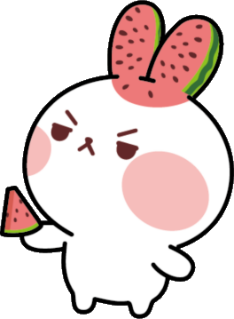
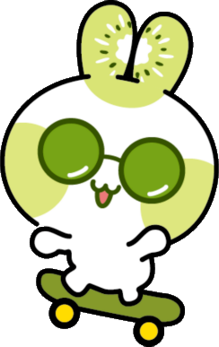
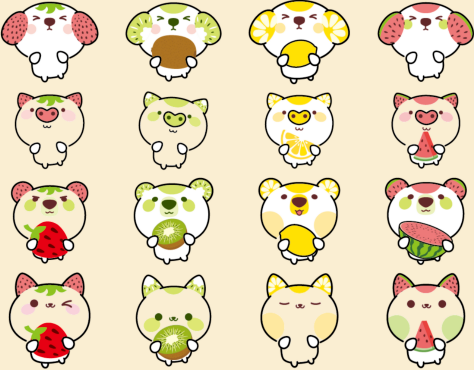

02 / OUR LITTLE UNIVERSE
달에서 시작된 조금 특별한 인연.
신비로운 얼음사과나무를 돌보며 달나라에 살던 과일토끼들. 어느 날, 유성 충돌로 지구에 떨어진 친구들은 낯선 숲에서 새로운 이웃을 만나게 됩니다.
함께 집을 짓고 과일나무를 심으며 태어난 Fruit Village.고향인 달을 그리워하는 마음과 지구의 친구들을 사랑하는 마음 사이에서, 과일토끼의 진짜 모험이 시작됩니다.


귀마다 다른 과일, 저마다 다른 매력.
네 친구를 눌러 조금 더 가까이 만나보세요.
신비로운 얼음사과나무를 돌보며 달나라에 살던 과일토끼들. 어느 날, 유성 충돌로 지구에 떨어진 친구들은 낯선 숲에서 새로운 이웃을 만나게 됩니다.
함께 집을 짓고 과일나무를 심으며 태어난 Fruit Village.고향인 달을 그리워하는 마음과 지구의 친구들을 사랑하는 마음 사이에서, 과일토끼의 진짜 모험이 시작됩니다.
가방 속 작은 소품부터 달콤한 간식까지.
과일토끼의 색으로 채우는 나의 하루.
상품 제작 및 협업에 관한 자세한 내용은 CRZONE에 문의해 주세요.
과일 귀를 가진 강아지, 고양이, 곰 친구들까지.
더 넓어지는 과일토끼의 세계를 만나보세요.

상품 제작 · 브랜드 협업 · 캐릭터 라이선싱
과일토끼와 함께할 새로운 이야기를 기다립니다.